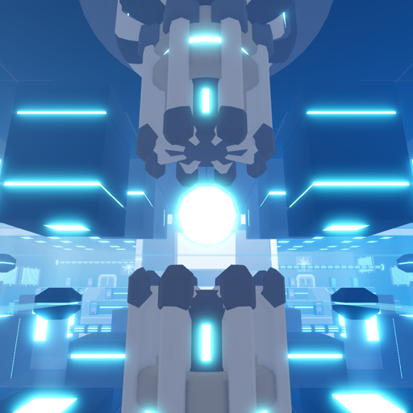

My Creative Statement:
My curiosity in game arts is related to the diversity in which games are able to tell stories, create difficulties and gather audiences. Having extensively played different game genres, I managed to get the feeling of what appeals to me in the concept of games. Namely, narrative-based games such as The Last of Us showed me the ability of games to create emotional experiences based on characters, environment and hard decisions. In addition, fast-paced first-person shooters and hero shooters are appealing to me due to the fast pace, unique abilities of characters and communities that emerge around the games. The YouTube personality Jacob Geller, whose videos are video essays, significantly influenced me with his works. In particular, his analysis of different phenomena, such as games, art, history, and many other things that goes beyond a simple review and summary of it. It makes me look closer at smaller details and the little things and think deeper for myself on what message they try to deliver to their audience so that those similar concepts and emotions can be reflected in my work. My ultimate goal is to create a game for myself where I would combine game design and media production by creating trailers and other promotional materials of the game world and its identity. What drives me is the opportunity to create a community of people who have similar ideas and vision and would like to be part of the created world.
Game Model
